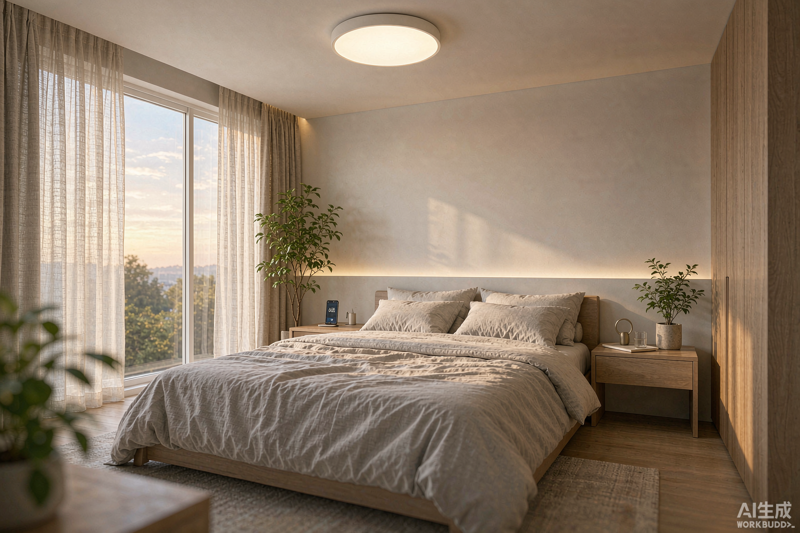
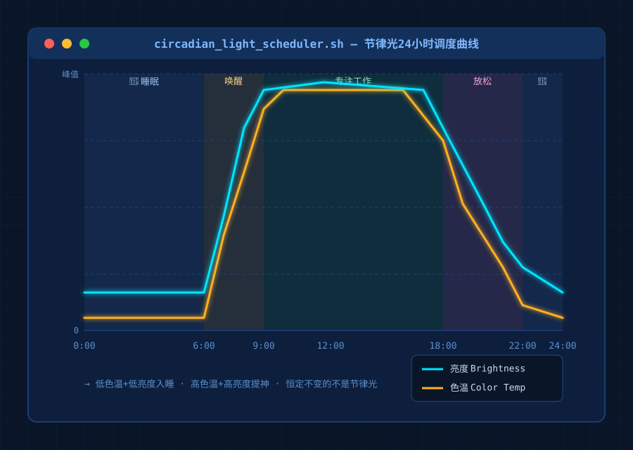
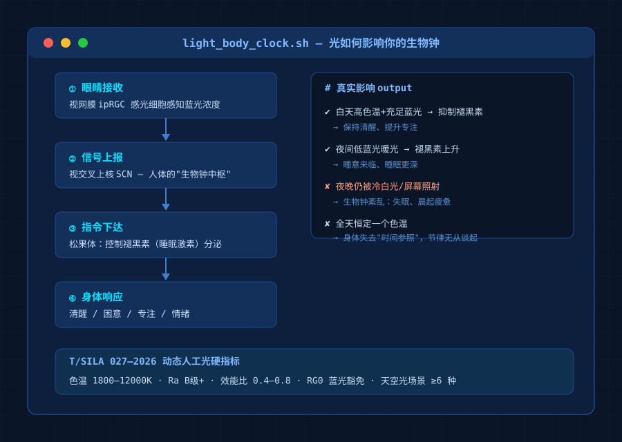
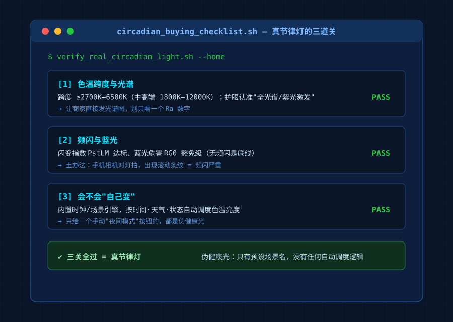

晚上越刷手机越清醒，早上起床昏昏沉沉，下午三点又开始犯困——你有没有想过，这跟你家那几盏灯有关系？
我们习惯把灯当"照亮工具"，但科学界早就发现，光除了让人看见东西（视觉效应），还在悄悄给身体发信号（非视觉效应）。人眼视网膜里有一类特殊的感光细胞（ipRGC），它不管你"看没看见"，只负责感受环境里的蓝光浓度，把"现在是白天还是晚上"报告给大脑的视交叉上核——人体的"生物钟中枢"。白天蓝光足，大脑就抑制褪黑素让你保持清醒；晚上蓝光退去，褪黑素才开始分泌，困意才会上来。客厅那盏冷白大灯、睡前刷的手机，都在告诉大脑："天还亮着。"

一、"会变的光"：节律照明到底是什么
如果一盏灯能像太阳一样在一天里自然变化——清晨低色温暖光唤醒、白天高色温白光提神、傍晚转暖、睡前自动降到低蓝光琥珀色——它就能顺着人体节律"推你一把"。这个方向叫节律照明（也叫动态人工光）。过去它是高端酒店、医院的配置，2026年正加速走进普通家庭。

二、告别"概念光"：新标准给了硬指标
以前商家说"护眼健康光"全靠一张嘴。8月欧普牵头发布《动态人工光LED照明产品技术规范》（T/SILA 027—2026），是国内首个系统定义这类产品的团体标准，好光从此有了可查的数字：
- 视觉维度：色温覆盖1800K~12000K，全色温区间显色指数、颜色分辨力都达B级以上；
- 非视觉维度：闪变指数、频闪效应可视度、视网膜蓝光危害均设明确限值；
- 核心新指标"生理等效天然光效能比"：一天内最大值不低于0.8、最小值不高于0.4——翻译成人话：这盏灯对生物钟的"推动力"必须真的会大幅变化。恒定一个色温的光再贵，也谈不上节律；
- 智能化：能复现不少于6种天空光场景（晴空、晨光、暮霞等），支持语音、App或定时自动切换。
以后再有人说"我家灯健康"，直接问三个数：**色温跨度多少？闪变指数多少？蓝光危害是不是RG0豁免级？**答不上来的，基本都是概念光。
三、大厂已经卷起来了
健康光正成为智能照明新卖点。9月初柏林IFA上，Govee发布Sky吸顶灯，主打478nm"天空蓝"光谱帮白天保持专注，色温1000K~10000K、CRI 95、RG0豁免级，还带"DaySync"按时间天气自动调光。国内公牛旗下沐光则押注MOSGPT大模型+紫光激发芯片，宣称光谱与太阳光相似度98%、Ra≥98，走"AI识别成员、因人调光"路线。厂商炫技归炫技，你掏钱时认准的还是上面那套硬指标。

四、普通人3步挑到真节律灯
第1步：看色温跨度与光谱。 至少覆盖2700K6500K，中高端做到1800K12000K才算全场景动态光；认真护眼就选宣称"全光谱/紫光激发"的，别只看Ra一个数，问它要光谱图。
第2步：看频闪与蓝光。 无频闪是底线，认准闪变指数PstLM达标；蓝光要RG0豁免级。土办法：手机相机对准亮着的灯，画面出现滚动条纹就是频闪严重，直接pass。
第3步：看它会不会"自己变"。 真节律灯=内置时钟或场景引擎，按时间、天气、状态自动调度；只给你一个手动"夜间模式"按钮的，都是伪健康光。
五、已经装好的灯，怎么低成本升级
不必全屋推倒重来，最见效的路径：
- 先升级卧室和书房：换成支持"双色温+定时场景"的智能灯，睡前两小时自动转暖调暗；
- 加一个低亮度感应夜灯，起夜不刺眼、不打断睡眠；
- 进阶：客厅换真·可调色温全光谱吸顶灯，配合网关做回家、观影、睡前一键切换的本地场景。
一个容易被忽略的真相：变光顺不顺、有没有频闪，根子在驱动电源。协议优先选Zigbee这类本地执行方案，别让"变光"依赖外网——断网时你总不希望半夜灯卡在冷白光上下不来。
预算有限记住一句话：先卧室、先睡前那两小时，把钱花在"晚上最后一缕光"和"早上第一缕光"上，回报最大。
光不该只会"亮"和"灭"。当它学会像太阳一样体贴你的节律，才算真的"智能"。下次挑灯，别只问亮不亮、好不好看，多问一句：它懂不懂你的白天和黑夜？